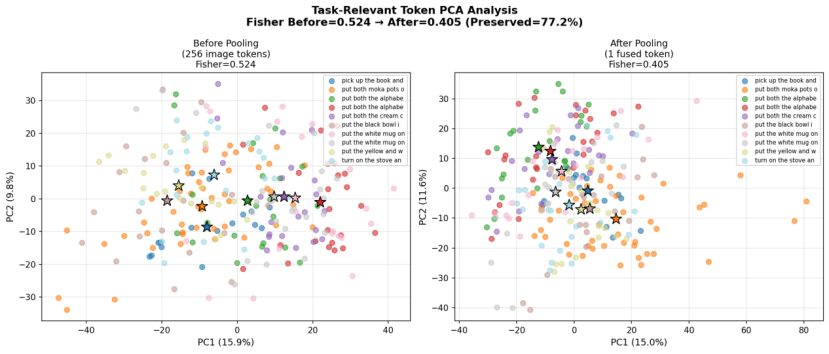
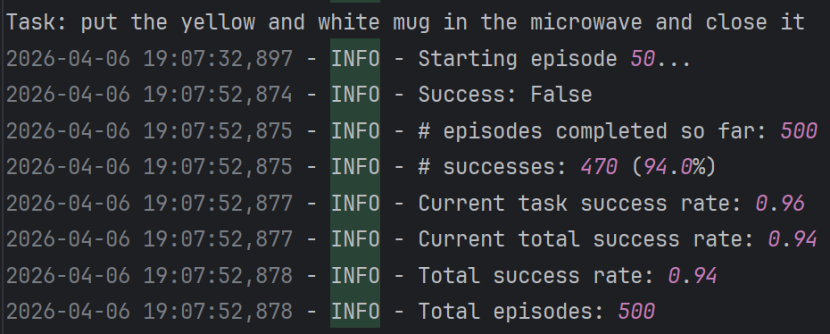
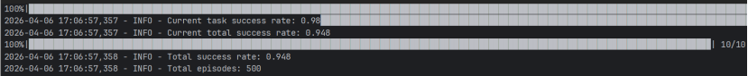
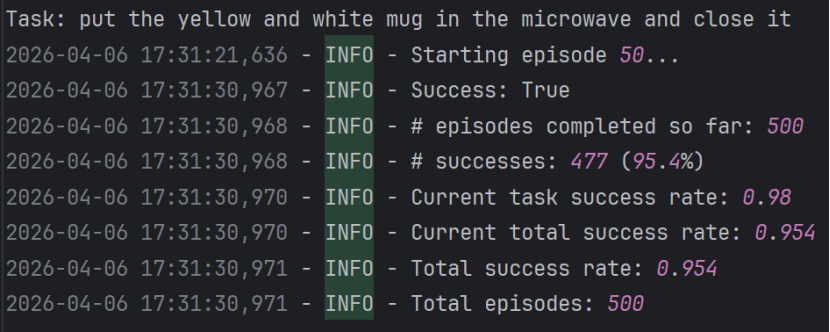
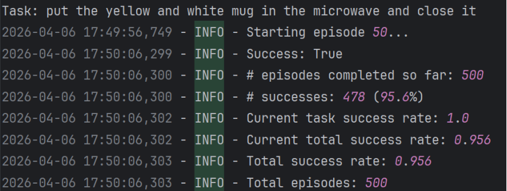
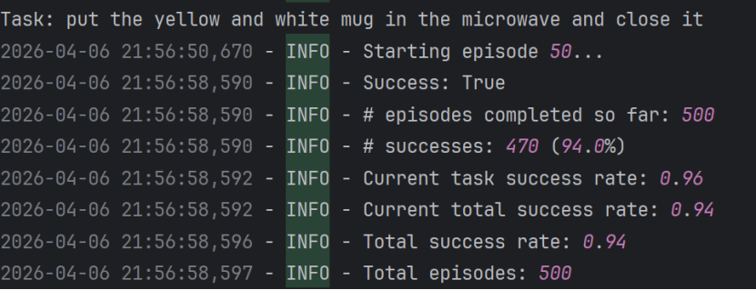

PCA visualization: Shows the clustering consistency across 10 tasks before and after feature compression.

Full LIBERO_Long inference: Success rate screenshots for configurations from 20/16 to 20/20, ensuring full traceability.
20/16 Replan_step 10:

20/18 Replan_step 10:

20/18 Replan_step 11:

20/18 Replan_step 12:

20/20 Replan_step 10:
